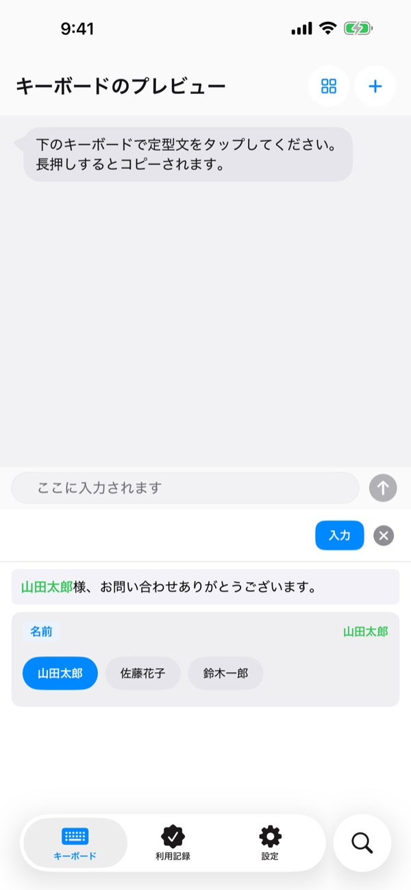
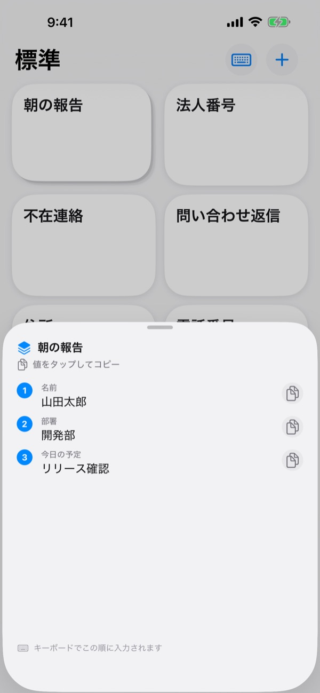
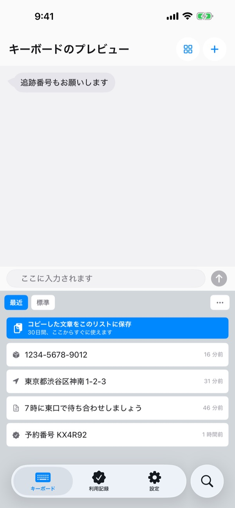
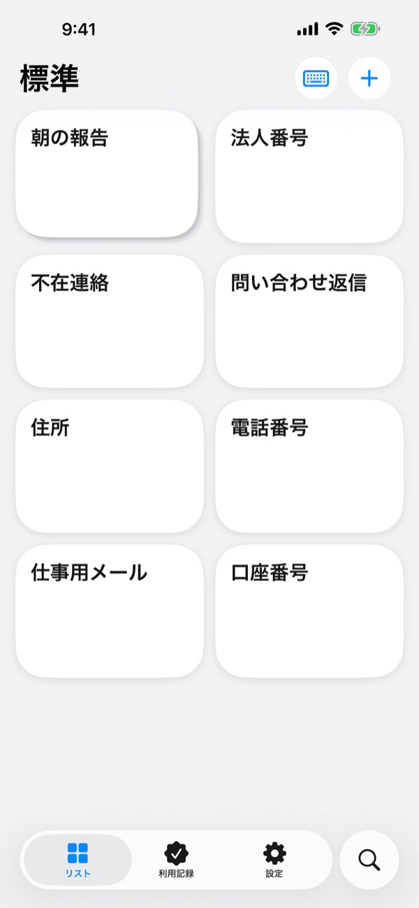

同じ文章を
もう何度も打たない
振込先の口座番号、住所、いつものメールの書き出し。一度保存しておけば、LINEでもメールでもSafariでも、文字を打てる場所ならキーボードからワンタップで入ります。
定型文を100回入力するまで、すべての機能が無料です。
ここで試してみてください
アプリの「キーボードのプレビュー」画面をそのまま持ってきました。iPhoneでは、文字を入力できる場所ならどこでもこのキーボードが使えます。
今日、口座番号を何回打ちましたか？
割り勘の振込先を聞かれて、銀行アプリを開いて番号をコピー。配送先の住所はまた一文字ずつ入力して、お客様へのメールには毎回同じあいさつを書く。ClipKeyboardは、そんな文章をキーボードに置いておき、必要なときにワンタップで呼び出します。
変わるところだけ埋めれば完成
テンプレートでは、{名前}や{日付}のように毎回変わる部分を空欄にしておけます。
入力するときは空欄だけを聞いてくるので、前に使った値を選んですぐに埋められます。

複数の値を、順番どおりに
スタックなら、名前、部署、今日のタスクのような複数の値をひとつのキーにまとめられます。
タップすると今の値が入り、横の矢印で次の値に進みます。

コピーしたものも、キーボードから
さっきコピーした追跡番号、住所、電話番号が、キーボードの「最近」タブにたまっていきます。
メールアドレス、電話番号、住所、カード番号、IBANを見分けて種類ごとに分けるので、あとからすぐに見つかります。

大事な番号はロックしておく
パスポート番号やカード番号はセキュア定型文にして、Face IDでロックできます。
紙に書かれた口座番号は、写真を撮って必要な文字の上を指でなぞるだけで取り込めます。

3ステップで始められます
- 1
キーボードを追加
設定 > 一般 > キーボード > キーボード > 新しいキーボードを追加 で、ClipKeyboardを選びます。
- 2
フルアクセスを許可
アプリに保存した定型文をキーボードが読み込むために必要です。入力した文字がデバイスの外に送られることはありません。
- 3
地球儀キーを長押しで切り替え
どのアプリでも、キーボードの🌐を長押ししてClipKeyboardを選び、キーをタップします。
キーボードに置けるもの
- 定型文
- 保存した内容をそのまま入力します。改行も絵文字もそのままです。
- テンプレート
- {名前}のように波かっこで残した空欄を、入力のたびに埋めます。
- スタック
- 複数の値をひとつのキーにまとめ、矢印で次の値に進みます。
- セキュア定型文
- Face IDまたはTouch IDで解除したときだけ入力されます。（Pro）
- 画像の定型文
- タップすると画像がコピーされ、メッセージにそのまま貼り付けられます。
- クリップボード履歴
- コピーしたものを種類ごとにまとめておき、いつでも呼び出せます。
- スキャンして文字を入力
- 写真の中の文字をなぞって、その部分だけを取り込みます。写真は保存しません。
詳しい使い方は、使い方ガイド（m1zz.github.io/ClipKeyboard/ja/tutorial.html）をご覧ください。
100回使ってから、決めてください
無料
- 定型文を100回入力するまで、すべての機能
- その後も、作ったものはすべてそのまま使える
- 新しく作れるのは定型文10個、テンプレート3個、スタック3個、画像5個まで
- クリップボード履歴50件
Plus · Pro
- Plus：定型文・テンプレート・スタック・画像が無制限、クリップボード履歴100件
- Pro：Plusのすべてに加えて、iCloudバックアップ、Face IDロック、デバイス間の同期（ベータ版）
どちらも年額サブスクリプションか、買い切り（永久）から選べます。
支払わなくても、サブスクリプションが終わっても、作った定型文が消えることはありません。広告もありません。
よくある質問
キーボードに定型文が表示されません。
フルアクセスがオフになっている可能性があります。設定 > 一般 > キーボード > キーボード > ClipKeyboard で「フルアクセスを許可」をオンにしてください。
いつものキーボードも使い続けられますか？
はい。定型文を入力したあとは、元のキーボードに自動で戻ります。この動作は設定でオフにできます。ClipKeyboardだけで文字を打つこともでき、iPhoneの標準キーボードと同じ配列で23言語に対応しています。
日本語は入力できますか？
かなまでは入力できますが、漢字変換にはまだ対応していません。漢字まじりの文章を打つときは、ふだんのキーボードをお使いください。
コピーしたものが履歴に残りません。
iOSでは、ほかのアプリが勝手にクリップボードを読むことはできません。一度アプリを開いてからキーボードを使うと、履歴に入ります。
テンプレートに保存された値を消すには？
テンプレートの編集画面で空欄をタップすると、保存された値の一覧が出ます。スワイプすると1つずつ削除できます。
100回を超えるとどうなりますか？
作った定型文、テンプレート、スタックはすべてそのまま使えます。無料の上限がかかるのは新しく作るものだけです。上限をなくしたいときは、PlusかProをお選びください。
定型文がどこかに送られることはありますか？
いいえ。定型文はこのデバイスにだけ保存され、内容を収集することはありません。iCloudバックアップをオンにすると、ご自身のiCloudに暗号化して保存されます。集めているのはアプリ改善のための匿名の利用統計だけで、サードパーティの解析ツールは使っていません。
機種変更したら、定型文はどうなりますか？
ProのiCloudバックアップをオンにしておけば、新しいデバイスで同じApple アカウントから復元できます。画像の定型文もいっしょに移ります。復元すると、そのデバイスにあった定型文はバックアップの内容に置き換わるのでご注意ください。
iPadでも使えますか？
はい。iPhoneとiPadの両方で使えます。
ここにない問題があります。
下のメールアドレスに、どんな状況だったかを送ってください。たいてい1日以内にお返事します。
ご質問やご意見は leeo@kakao.com までお寄せください。